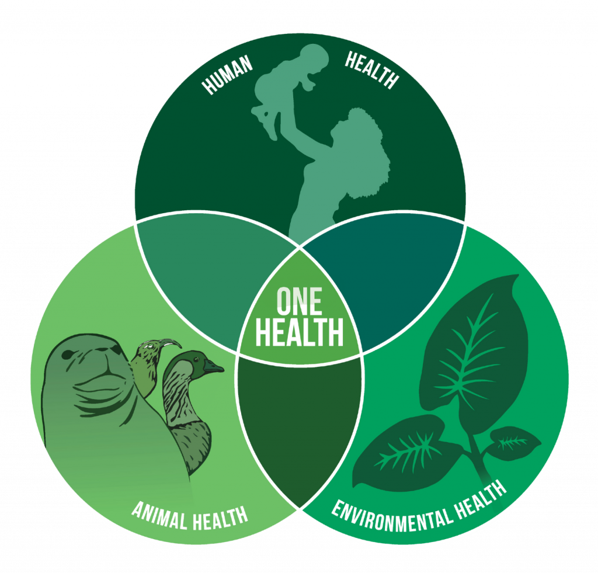

Génesis Soto Sepúlveda
One Health · AMR
One Health · Resistencia antimicrobiana
Génesis Lucía
Soto Sepúlveda
Médica Veterinaria · Estudiante de Doctorado en Ciencias Silvoagropecuarias y Veterinarias, Universidad de Chile. Investigo la circulación de Escherichia coli resistente entre animales de compañía, aves de producción y el ambiente.
Fig. 01 — Agar MacConkey · estriado de Kass
Urocultivo con asa calibrada: la orina se siembra en una línea central y se cruza con un estriado continuo en curvas. Al fermentar lactosa, E. coli acidifica el medio y forma colonias rosadas contables.
MedioSelectivo-diferencial
LactosaFermentador (+)
01
Fuente de inspiración
El inicio de esta carrera comenzó el 2018, al querer entrar a estudiar veterinaria para saber cómo cuidar a mi perrita Chubie. Ahora, ocho años después, creo que soy capaz de hacer algo más grande para cuidarla tanto a ella como a otros animales.
Chubie
02
Investigación
Aunque solo el 6% de los tutores de mascotas utiliza dietas crudas exclusivas para sus animales de compañía, más del 50% incorpora carne de pollo o sus derivados como snack o complemento en la alimentación de perros y gatos. Al no recibir tratamiento térmico, esta práctica expone a las mascotas a Escherichia coli patógena aviar (APEC), cuya relación genética con las cepas de Escherichia coli uropatógenas (UPEC) circulantes en caninos y felinos aún se desconoce.
Mi investigación de doctorado busca esclarecer ese vínculo, evaluando el rol de las aves de producción como reservorio de patógenos extraintestinales resistentes a antimicrobianos y su capacidad de generar enfermedad entre especies, en el marco de un enfoque One Health que conecta la salud animal, humana y ambiental.
Fig. 02 — Genes de virulencia y el vínculo por esclarecer
APEC
Aves de producción
iroNompThlyFissiutA
∗
Relación desconocida
UPEC
Caninos y felinos
papCsfaDEhlyAfimHkpsMII
∗ Ambos patotipos comparten factores de virulencia extraintestinal, pero aún se desconoce si las cepas que circulan en aves de producción y en animales de compañía están genéticamente relacionadas: ésa es la pregunta que abre mi tesis.
Afiliación
Actualmente trabajo como asistente de proyectos y coordinadora de tesistas en el laboratorio MicroVet de la Facultad de Ciencias Veterinarias y Pecuarias, Universidad de Chile.
03
Especies de estudio
Mi trabajo sigue la ruta que recorre Escherichia coli entre distintos huéspedes: aves de producción, perros y gatos, evaluando la relación entre cepas que circulan en distintas especies bajo un enfoque One Health.


04
Contribución a la comunidad
Memoria de título · 2025
Oxitetraciclina en el entorno productivo de pollos broiler: efecto sobre la resistencia antimicrobiana y la formación de biopelículas de Escherichia coli
Este trabajo mostró que el tratamiento con oxitetraciclina en pollos broiler favorece la aparición de E. coli resistente a tetraciclinas en camas, deyecciones, comederos y bebederos, y que esa resistencia se asocia a una mayor formación de biopelículas. La capacidad de formar biopelículas disminuyó a medida que bajaba la concentración del antimicrobiano en el ambiente, lo que sugiere que estas comunidades bacterianas actúan como un mecanismo de persistencia de la resistencia dentro de la producción avícola y un punto crítico para su diseminación hacia la cadena alimentaria.
Proyección
Quiero seguir contribuyendo a la comunidad, aportando las bases que permitan mejorar la regularización de la ingesta de antimicrobianos en el área animal.
